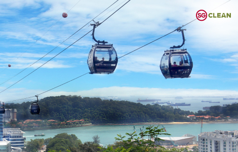

Mount Faber Park
Mount Faber Park
There is always something new to see or discover at Mount Faber Peak!
Surrounded by lush greenery and tucked away from the hustle and bustle of the city, Mount Faber Peak offers an elegant respite at 100 metres above sea level.
DIRECTORY
- Singapore Cable Car
- SkyHelix Sentosa
- Wings of Time
- Mount Faber Peak
- Map of Mount Faber
Singapore Cable Car
Fly on board the Singapore Cable Car and enjoy the amazing aerial views that unfold all around you from 100 metres above sea level.
The only cableway that links Mount Faber, HarbourFront and Sentosa Island, the Singapore Cable Car Sky Network connects you to a multitude of experiences while making the journey an unforgettable one.
Cable Car Lines
- Mount Faber Line
- - The most scenic way to experience Singapore, the Mount Faber Line offers a variety of priceless panoramic views.
- Start at the Mount Faber Station and enjoy the wonderful hilltop view of the lush rainforest before flying to the HarbourFront station to take in the stunning view of the Singapore Harbour.
- Be mesmerised by the breathtaking view of Sentosa as you fly into Sentosa station.
- Sentosa Line
- The Sentosa Line runs seamlessly throughout the island.
- Hop on the Singapore Cable Car at Imbiah Lookout Station and enjoy the spectacular bird's eye view of the island before alighting at Siloso Point Station.
- Discover the rich history of Fort Siloso before hopping back on the cable car headed to Merlion station.
- Fly above the golden sandy beaches and snap an insta-worthy picture of the stunning landscape below.
Opening Hours: 8:45am to 10:00pm daily (Last boarding at 9:30PM)
For rates and booking, click here
Mount Faber and Sentosa Line

SkyHelix Sentosa
ABOUT
Take flight in the highest open-air panoramic ride in Singapore SkyHelix Sentosa!
Sit in an open-air gondola that gently rotates as it ascends to a height of 79 metres above sea level.
Let your hair down, feel free, dangle your feet in the air and enjoy the uplifting experience with a cool drink in hand.
Be mesmerised by the breathtaking views stretching from Sentosa to the Keppel Bay area and the Southern Islands.
Day or night, each flight is a ride to remember!
Safety Guidelines
- Height > 1.05 metres.
- NOT suitable for:
- - Expectant mothers.
- - Guests who have fear of heights.
- - Guests with limited mobility.
- Pets NOT allowed on ride.
- Loose clothing or items NOT allowed on ride.
- Seatbelts secured on at all times during ride.
- One metre distance between groups.
Purchasing of tickets can be made here
Wings of Time
Storyline
The magical adventure begins with Shahbaz, a prehistoric bird.
Together with his friends, Rachel and Felix, they travel across beautiful landscapes and the mysteries of time,
featuring artistic interpretations of the Industrial Revolution, the Silk Road era, Mayan Pyramids, Underwater World and African Savanna.
As Shahbaz's friends discover more about themselves, will they find the courage to be who they really are?
Will Shahbaz find his way home and will the trio find true friendship at the end of the journey?
Showtimes:
7:40pm & 8:40pm Daily
Ticket Prices
Standard Seat: SGD18
Premium Seat: SGD23
For booking, click here
Mount Faber Peak
____________________________________________________
What About It?
Home of the Singapore Cable Car, an iconic symbol since 1974,
Mount Faber Peak is the only hilltop destination in Singapore with breathtaking scenic views of the harbour, Sentosa and the Singapore skyline.
Surrounded by lush greenery and tucked away from the hustle and bustle of the city,
Mount Faber Peak offers an elegant respite at 100 metres above sea level.
Visitors looking to get close to nature can also venture up to Mount Faber Park for a breath of fresh air, immersing themselves in the rustic surroundings of one of Singapore's oldest parks.
A treasure trove of experiences awaits at Mount Faber Peak - from spectacular hilltop views to a suite of leisure, lifestyle and F&B services.
5 Five Facts About Mount Faber
- Mount Faber Was Named After Captain Charles Edward Faber
- In 1819, Sir Stamford Raffles established a trading port in Singapore and trade flourished, resulting in many ships arriving at the Singapore port. Captain Charles Edward Faber from Madras Engineers then built a new road to the summit of Telok Blangah Hill and installed a signal station and flagstaff for ships that sailed into the harbour. In recognition of his contribution, the government renamed Telok Blangah Hill to "Mount Faber" in July 1845.
- Mount Faber Was A Defence Fort for Colonial Singapore
- This tranquil hilltop park was once armed with guns to protect Singapore against attacks by enemy vessels, until 1885! From the hill's high vantage point, Mount Faber made for an ideal location to build a defence fort as the guns could easily pick out any enemy vessel from above.
- Mount Faber Was Home to Malay Royalty
- The foothill of Mount Faber was the royal settlement of Temenggong Abdul Rahman and his subjects since 1823. The royal burial ground and mausoleum of the Temenggong and his descendants on the hill slope remains until today and are under the care and ownership of the Sultan of Johore.
- Mount Faber Was Officially Opened by Former Prime Minister Lee Kuan Yew
- On 17 January 1965, Mount Faber Scenic Park was officially opened by Singapore's former Prime Minister Lee Kuan Yew, the first park to be opened after Singapore's independence, to provide recreational spaces for Singaporeans, foreshadowing the vision of Singapore as a Garden City.
- Mount Faber is Home to the Singapore Cable Car
- Discover the picturesque spots along Henderson Waves (highest pedestrian bridge in Singapore connecting Mount Faber Peak to the neighbouring Telok Blangah Hill), the official Merlion sitting on the highest point on Faber Point, Poland's Bells of Happiness and vintage cable cars for photo worthy moments.
Not forgetting to enjoy some family dining or have a chill out at session at our restaurants!
Map of Mount Faber

Click here
to download PDF
Jump to Top